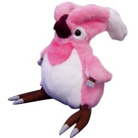

|
|
| 2002.2.20 |
|
WIN
|
【『WebMoney for Online Game』発売のお知らせ】 |
株式会社ウェブマネー様により、オンライン専用ウェブマネー『WebMoney for Online Game』が2月21日（金）より特別価格（1,900円
非課税）で、ローソン、サークルK など、コンビニエンスストアにおいて販売開始されます。
オンラインゲーム専用のWebMoney2000Pointに人気オンラインゲームタイトル12本収録されたDVD-ROMが付属しています。
『ファンタシースターオンライン』（以下「PSO」）の『WebMoney for Online
Game』専用バージョンを収録しており、シリアルナンバー／アクセスキーを付属のWebMoney(2000points)で購入すると、オフラインプレイ及び１５日間のオンラインプレイが楽しむことができます。
これから「PSO」を始めようと考えている皆様にとって絶好のチャンスですので、是非この機会にプレイしてみてください！
 |
|
商品名称 |
： |
WebMoney for Online Game |
|
定価 |
： |
1,900円（非課税扱い） |
|
販売開始 |
： |
2003年2月21日〜 |
|
販売店舗 |
： |
全国コンビニエンスストア
サークルK、ローソン（他、順次） |
|
■詳しい情報はこちら
■『WebMoney for
Online Game』に関する詳しい情報はこちら |
| 2003.02.11 |
|
GC
|
【「第３回ＰＳＯファン感謝祭ファミ通ＣＵＰ MAXIMUM
ATTACK-2nd Stage- 」終了のおしらせ】 |
沢山の皆さんのご参加を頂きました、「第３回ＰＳＯファン感謝祭ファミ通ＣＵＰ MAXIMUM
ATTACK-2nd Stage-」ですが、さきほどカウンターをストップいたしました。
(株）ソニックチーム 代表取締役社長 中 裕司より、参加してくださった皆様への感謝の言葉を掲載させていただき、終了の挨拶に代えさせていただきます。
| 皆さん こんにちは。 ソニックチームの 中 裕司 です。
第３回ファミ通ＣＵＰ-Maximum Attack 2nd Stage-が２月１０日に終了いたしました。
当初、昨年越えられなかった１億ポイントを越えるぞ！という目標で始めた今回のファミ通ＣＵＰでしたが、終わってみれば１億５０００万ポイントを越える結果となり、予想を大幅に超える結果を出せたことに開発者一同驚いております。
イベント全体を通して大変な盛り上がりを見せることができたのも、ハンターズの皆さんとファミ通さんの御協力のおかげと、大変感謝しています。
このイベントをきっかけに、知らない人とも友達になれたり、自分達のチームを作って友情を深めたプレイヤーの方もたくさんいらっしゃったようです。
期間中にカップルを誕生させるのが目的のミニイベントでは「カップルイベントは恥ずかしかったけれど、彼とカップルになれてうれしかった」との微笑ましい報告を頂きました。
また、ちょっと変わった人では、「受験勉強中だったけどファミ通ＣＵＰがやりたくてやってしまった！」なんて話も耳にしました。
皆さんがそれだけＰＳＯを愛して下さっているのは本当に感謝すべきことだと、今回あらためて感じました。
イベントの終了時には、クエストの配信も終了する予定だったのですが皆さんから残して欲しいというご意見を多数頂いたため、検討の上残すことに決定しました。
また、もう一つ皆さんに良いお知らせがあるのですが、こちらは今後発売の週刊ファミ通をご覧下さい。
今回のイベントは終了ですが、今後もこういった皆さんが参加できるようなイベントを考えていきたいと思いますので、これからも
「ファンタシースターオンライン」の応援をよろしくお願いします！
(株）ソニックチーム 代表取締役社長 中 裕司
|

イベント公式ページはこちら！
昨年１０月に発売されてご好評を頂いた（株）ユージン様のＰＳＯカプセルフィギュアに、早くも第２弾が登場です！
今回はデフォルトカラーではないコスチュームをセレクト。
もしかしたらあなたのキャラクターにそっくりなものもあるかもしれませんよ？
エピソード１＆２に登場するレア武器なども登場し、またもやコダワリが光る逸品になりました。
発売は今週末頃からとなります。是非挑戦してみてくださいね！
 |
|
発売日
|
２月中旬発売予定 |
|
商品仕様
|
全１２種（１カプセル２体入り・マグ２種・武器付き）
※１カプセルに彩色済みフィギュア１体とクリア成型１体の２体入りとなります。 |
|
価格
|
各２００円（税込） |
|
より大きい画像はこちらです！
2003.2.11 ソニックチーム
|
| 2003.02.07 |
【コスパ・ＰＳＯ関連商品を更新】
コスパ様のＰＳＯ関連商品情報を更新しました。
ラッピーぬいぐるみの新作、
「アルティメットの清涼剤（？）」エル・ラッピーと「愛の使者」ラブ・ラッピーの２点がコスパさんより新登場です。
 |
 |
エルラッピー ぬいぐるみ ￥3,800
（2月下旬発売予定）
|
ラブラッピーぬいぐるみ ￥3,800
（2月下旬発売予定）
|
くちばしや触覚、目の位置の違い、「ふかもこ感」など、ラグ・ラッピーとの細部の違いまでこだわった逸品です。是非お求めください！
【ＰＳＯ関連書籍情報を更新】
発売中のPSOコミック２冊、
双葉社様
「ファンタシースターオンライン エピソード１＆２ ４コマKINGDOM」
スタジオDNA様
「ファンタシースターオンライン エピソード１＆２ コミックアンソロジー」
２月１７日（月）発売予定の
ソフトバンクパブリッシング株式会社様
「ファンタシースターオンライン エピソード１＆２ 設定資料集」
の情報を掲載しました。
 |
 |
 |
『PSO EPI&II』
４コマKINGDOM
|
『PSO EPI&II』
コミックアンソロジー
|
『PSO EPI&II』
設定資料集
|
是非ご覧ください！
2003.2.7 ソニックチーム
|
| 2003.02.05 |
|
HP
|
【 マシン増強によるホームページサービス一時停止のお知らせ】 |
現在BBS等でご利用いただいているwww2.sega.co.jpのサーバですが、マシンスペックおよび回線の増強を行なうため、サービスを一定期間停止いたします。
具体的な作業として、マシンの移転、ハードディスク内のデータの移行、DNSの切り替えが行なわれます。そのため、この期間中はマシンが完全に止まることになり、www2.sega.co.jpに依存しているすべてのサービスも停止いたします。
停 止 期 間 ：
2003年2月19日（水） 10:00〜18：00
停止するＨＰ（ＰＳＯ関連のみ）：
ゲームキューブ版PSOの交換ディスクの申し込み登録
停止するBBS（ＰＳＯ関連のみ）：
ファンタシースターオンライン 総合フリーBBS
ファンタシースターオンライン 総合シークレットBBS
ファンタシースターオンライン(Windows版）フリーBBS
ファンタシースターオンライン(Windows版）シークレットＢＢＳ
その他停止するサービスにつきましてはこちらをご覧ください。
その他の影響 ：
| １ |
DNSに新しいサーバが認識されるまで数日かかる事があり、この期間はドメイン名でのアクセスで古いサーバにアクセスする場合があります。
そのため、この期間中は古いサーバと新しいサーバを同時に運営することになります（古い方を無くしてしまうと、どこにもアクセスできなくなる可能性があるからです）。
特にBBSでの影響が考えられ、新しいほうに書き込んだつもりが古いサーバのBBSに書き込まれていく可能性があります。しかし古いほうから新しいサーバにデータを移すことはできません。
2月19日の再開後は、古いサーバにアクセスした際に新しいサーバをお知らせするメッセージを表示する予定ですが、古いサーバにアクセスしないように、しばらくの間（数日）はご注意ください。 |
| ２ |
マシンのシステムが変わるため、BBSの確認キーも新たに取り直す必要があります。 |
以上、ご不便をおかけいたしますが、何卒ご了承ください。
|
PSO
|
【ｉｓａｏ．ｎｅｔ会員で１８歳未満にて登録をされているお客様への知らせ】 |
２００３年２月１日よりＫＩＤＳコースが有料化される事に伴い、現在以下の条件にて、セガネットワークサービスご利用中のお客様のＫＩＤＳコースＩＤが随時廃止となります。
このisao.netのサービス改定により、現在ＫＩＤＳコースのｉｓａｏ．ｎｅｔ ＩＤ（●●＠●●.isao.net／●●＠●●.dricas.com）をご利用で、
１月末までに新しいKIDSコースへのご加入や、接続コースの変更を行わなかったお客様は、（のIDはisao.netにて順次抹消処理が行われ）順次オンラインゲームができなくなります。
詳細に関しましては、ｉｓａｏ．ｎｅｔサポートセンターにて受付しておりますのでｉｓａｏ．ｎｅｔサポートセンターへお問合せお願いします。
【対象となるお客様】
| １ |
ＫＩＤＳコースにてｉｓａｏ．ｎｅｔ アクセスポイントをご利用され接続されている方。 |
| ２ |
ＫＩＤＳコースにて登録を行なったｉｓａｏ．ｎｅｔ ＩＤにてゲームコンテンツ利用料をお支払いの上、ｉｓａｏ．ｎｅｔ以外のアクセスポイントでＩＳＰ接続されている方。 |
【ＫＩＤＳコース有料化及びコース変更などに関する問合せ先】
詳細につきましてはこちらをご確認ください。
ｉｓａｏ．ｎｅｔサポートセンター
メール：support＠isao.net
ナビダイヤル：０５７０-０５７-０５０
受付時間：１０：００〜２１：００月〜金（祝日及びｉｓａｏ．ｎｅｔ指定日除く）
※ 尚、ドリームキャストサポートセンター・セガカスタマーサポートなど、弊社サポートセンターにお問合せいただきましても、ご対応できませんのでご注意ください。
2003.2.5 ソニックチーム
|
| 2003.01.28 |
Ｘｂｏｘ版の発売後、「個人ＨＰにおいてＸｂｏｘ版ＰＳＯのキャプチャー画像を使用しても良いか」とのお問い合わせを何件か頂いております。
このため、「ファンタシースターオンライン」著作物利用規約を一部改定いたしました。
■「ファンタシースターオンライン」著作物利用規約
結論としては、掲載可能であり、
(C) SONICTEAM / SEGA, 2000, 2003.
というＸｂｏｘ版の権利表記と
『このページで使用されている画像は（株）ソニックチームの許諾を得て、Ｘｂｏｘ用ゲーム「ファンタシースターオンラインエピソード１＆２」よりキャプチャーしたものです。』
との注意書きをしていただければ、他機種版と同様に掲載することが可能です。
個人ＨＰをお持ちの皆さん、よろしくお願いいたします。
2003.1.28 ソニックチーム
|
| 2003.01.24 |
来る2003年2月14日（金）、3月2日（日）に、PSO内におきましてマイクロソフト様により、イエローキャブ所属の人気アイドルと一緒にネットワークプレイを体験できる、『Xbox
Live イエローキャブ祭り in PSO』が開催されることとなりました。
詳細はマイクロソフト様の【Xbox
Liveホームページ】・イベント情報をごらんください。
「声が聞こえる」Xbox Liveならではのイベント、是非ご参加ください!
2003.1.24 ソニックチーム
|
| 2003.01.17 |
|
WIN
|
【Win版PSO一周年記念イベント「続！みんなでひろげようシンボルチャットのわ!!」終了のお知らせ】 |
昨年の１２月より開催されていました、Phantasy Star Online for Windows 発売一周年記念イベント「続・みんなでひろげようシンボルチャットの わ！」は、1月17日(金)18:00をもちまして終了させていただきました。
多くの方々にご協力いただき、誠にありがとうございました。
今回のイベントでの３００００カウント達成は皆様の協力無くしてはできなかったと思われます。
目標達成、本当におめでとうございます！そして一ヶ月間お疲れ様でした！
イベント中の新しい出会い、そこで生まれた友情、外国文化との触れ合い、ハンターズが一丸となり一つの目標に向かい頑張った思い出が皆様の心に残り、貴重な財産となって頂ければ幸いです。
最後のレポート更新を致しましたので、イベント公式HPも是非ご覧ください。

イベント公式HPはこちらです！
2003.1.17 ソニックチーム
|
| 2003.01.16 |
いよいよ本日、Xbox版「ファンタシースターオンライン エピソード１＆２」が発売となりました！
すでにサーバーは稼動していますが、
Xbox版PSO エピソード１＆２サポートHPも開設いたしました。
■Xbox版PSO エピソード１＆２サポートHP■

ボイスチャットによる、あたらしいPSOの世界を、是非お楽しみください！
2003.1.16 ソニックチーム
|
| 2003.01.15 |
|
HP
|
【新『PSO』総合BBS稼動開始のお知らせ】 |
先日停止させていただきました、旧『PSO』総合フリー・シークレット両BBSに代わりまして、新システムとなりました新『PSO』総合フリー・シークレット両BBSを下記アドレスにて稼動開始いたしました。
書き込みもカテゴリー別となりますので、今後はすべてのPSO関連ニュースをこちらでもお伝えするとともに、プラットフォームを問わない、『PSO』ユーザーの皆様の交流の場になればと願っております。
今までと同様、こちらのBBSもご愛顧くださいますよう、お願いいたします。
【ご注意】
申し訳ありませんが、これまでご使用になっていた確認キーは使えません。新規に確認キーを取得してご利用くださいますようお願いいたします。
|
2003.1.15 ソニックチーム
|
| 2003.01.10 |
みなさん、遅ればせながらあけましておめでとうございます。
ＰＳＯもＤＣ版発売から数えて、なんと２周年を迎えることができました。
これもひとえに支え続けてくださっている皆さんのおかげだと思っております。
本年もソニックチームとファンタシースターオンラインをよろしくお願いいたします。
ファンタシースターオンライン発売当初よりみなさんに長らく親しんできていただきました、PSO総合フリー、シークレットBBSですが、より皆さんに使いやすいシステムへリニューアルさせていただくため、
２００３年１月１４日（火） １８：００をもって書き込みを一時停止させていただきます。
停止した後は、現行のアドレスでは過去ログの閲覧のみとなります。
リニューアルされた新ＢＢＳは新しいアドレスにて、２００３年１月１５日（水）より稼動の予定です。ページ数は、これまでの足跡を記念し、継続する形を取らせていただきます。なお、確認キーは誠に申し訳ありませんが、再度取り直していただくこととなりますので、ご了承ください。
リニューアルＢＢＳは、ファンタシースターオンラインをお楽しみの皆さまにプラットフォームを問わずコミュニケーションや話題を楽しんでいただける総合BBSとなり、発言の際にカテゴリー選択ができるようになる予定ですので、お楽しみにお待ちください。
これまでPSO総合フリー、シークレットBBSをご愛顧いただき、本当にありがとうございました。今後とも、(株)ソニックチーム・(株)セガ及びファンタシースターオンラインシリーズをご愛顧いただきますようお願い申し上げます。
|
GC
|
【「第３回ＰＳＯファン感謝祭ファミ通ＣＵＰ MAXIMUM
ATTACK-2nd Stage- 」開催!!】 |
イベント公式ページはこちら！
お待たせしました！
いよいよ 本日より、「第３回ＰＳＯファン感謝祭ファミ通ＣＵＰ MAXIMUM
ATTACK-2nd Stage- 」がスタート致します。
今回もハンターズ全員でエネミーを倒し1億ポイントを集める事が目標となります。
ＤＣ版で行われました前回は、92765971ポイントと惜しくも目標に到達する事ができませんでした。今度こそハンターズ全員の力を結集して1億ポイントを達成し、素敵な商品をゲットしましょう！
イベント期間は 2003年1月10日〜2003年2月10日です。
イベントに関する詳しい情報や、イベント中の最新情報に関してはＧＣサポートＨＰ内
『みんなの広場』の『イベント情報』をご覧下さい。
 GCサポートＨＰはこちらです。 GCサポートＨＰはこちらです。
みなさん、ぜひご参加ください！
2003.01.10 ソニックチーム
|
| 2002.12.26 |
【コスパ・ＰＳＯ関連商品を更新】
コスパ様のＰＳＯ関連商品情報を更新しました。
でかラッピーぬいぐるみ（1月下旬発売予定 ）
ブーマＴシャツ（発売中）
ハニュエールＴシャツ（発売中）
ダークファルスＴシャツ（発売中）
でかラッピーは迫力満点！是非お求めください！
【ＰＳＯ関連書籍情報を更新】
すでに発売中ですが、
ソフトバンクパブリッシング株式会社様
「ファンタシースターオンライン エピソード１＆２ アルティメット システム×ストーリー編
」 （発売中 ）
「ファンタシースターオンライン エピソード１＆２ アルティメット クエスト×レアアイテム編
」 （発売中 ）
の情報を掲載しました。
来年には、４コママンガやアンソロジーコミック、さらに設定資料集も発売になる予定です。ＰＳＯ関連書籍にご注目ください！
2002.12.26 ソニックチーム
|
| 2002.12.02 |
|
WIN
|
【Windows版「ファンタシースターオンライン」発売一周年記念キャンペーン開催！】 |
日頃よりWindows版『ファンタシースターオンライン』を楽しんでいただいている皆様への感謝と、更なるネットワーク登録者数の拡大を目的として2002年12月16日よりWindows版『ファンタシースターオンライン』発売１周年記念キャンペーンを開催いたします。
キャンペーン期間中には３つのイベントが用意されていますので
是非お楽しみ下さい！
| １ |
「続！みんなでひろげようシンボルチャットのわ!!」開催中!! |
|
夏のアジアキャンペーンに引き続き、オンラインイベントを開催します。
今回は夏のキャンペーンの最終カウント数を引き継ぎ、パワーアップしてお届けします！
イベント期間中にロビーに隠れたソニック達を探し出し、シンボルチャットをもらい、３００００個広めるのが目的です。広める対象となるシンボルチャットは８種類！（ＰＳＯに登録されている言語の国をイメージしたオリジナルシンボルチャットです）
広まったシンボルチャットの数に応じて参加者へのプレゼントやクエストがパワーアップしていきます。各国のハンターズの総力を結集して３０,０００カウントを目指しましょう！！
【開催日時】
2002年12月16日 〜2003年1月17日
イベント公式HPはこちらです！
夏のキャンペーンの詳細はこちら |
| ２ |
プレゼントキャンペーン |
|
2002年12月16日から2003年1月20日の間ににオンラインプレイ料金(ハンターズライセンス)及びオンラインプレイ権(シリアルナンバー・アクセスキー)をオンラインにてご購入いただいたお客様、さらに製品から新規ユーザー登録を行ったお客様に、抽選で豪華賞品があたるキャンペーンを実施します。
詳細はこちら！ |
| ３ |
オンラインプレイ権（シリアルナンバー・アクセスキー）プライスダウン！ |
|
現在PCハードやグラフィックカード、ルーター等に幅広くバンドルを行っている『PSO』をより多くのユーザーの皆様にオンラインプレイを楽しんでいただくことを目的として、2002年12月20日
からオンラインプレイ権（シリアルナンバー・アクセスキー）の価格を\4,000-（税込）から新価格
\2,000-（税込）に引き下げます。
詳細はこちら！ |
みなさんお楽しみに!
2002.12.2 ソニックチーム
|
| 2002.10.28 |
| 本日行われました、第６回 CESA GAME AWARDS授賞式におきまして、ＸＢＯＸ版「ファンタシースターオンライン エピソード１＆２」が、「東京ゲームショウ2002」にて発表･展示された未発売作品を対象とした、今後発売される中で期待されるゲームに与えられる、『GAME
AWARDS FUTURE』の優秀賞を受賞いたしました。
みなさまの期待に応えられるよう、これからもがんばっていきますので、今後ともファンタシースターオンラインをよろしくお願いいたします。
トロフィーの写真はこちら。 |
 受賞を喜ぶ見吉D
受賞を喜ぶ見吉D
|
2002.10.28 ソニックチーム
（10.31 写真を追加）
|
| 2002.10.01 |
|
HP
|
GC
|
【isao.netより、第2回PSOイラストコンテスト人気投票結果発表！】 |
200点近くもの作品が集まった今回のイラストコンテスト。たくさんのご応募と投
票、誠にありがとうございました。果たして金賞・銀賞はどの作品が選ばれたので
しょうか？
入賞した作品は、特大サイズの画像を見られるよう特別に用意しています。どうぞお
楽しみください！
PSOイラストコンテスト公式サイトはこちらです!
 |
| 2002.9.20 |
幕張メッセにて行われている「東京ゲームショー２００２」におきまして、
これまで「ファンタシースターオンライン」（仮）となっていた「Xbox Live スタータキット」に同梱されるXbox版PSOのタイトルを
『ファンタシースターオンライン エピソード１＆２』とすることを正式発表いたしました。
また、ハンターズライセンスは月額６００円
サービス開始日は２００３年１月１６日となります。
詳細はこちらをごらんください。
http://www.sonicteam.com/pso_xbox.html
http://sega.jp/release/nr020920_3.html
2002.9.20 ソニックチーム
|
| 2002.9.19 |
|
HP
|
【『ＰＳＯ エピソード１＆２』のサウンドトラックが発売!】 |
|
|
本日９月１９日、早くも（株）サイトロンより、『ＰＳＯ
エピソード１＆２』のサウンドトラックが発売されました！
エピソード１＆２のための新曲だけでなく、前サントラには入れられなかった曲もしっかりと収録しております。
詳しくはＰＳＯサウンドチームＨＰをごらんください!

PSOサウンドHPはこちら！ |
2002.9.19 ソニックチーム
|
| 2002.9.12 |
『PHANTASY STAR ONLINE EPISODE I＆II』の発売を記念して、「ソニックカフェ｣にて、なんと全１２キャラクターの「タイマー」アプリを無料でプレゼントすることに決定しました！内容は、設定した時間に『PHANTASY
STAR ONLINE EPISODE I＆II』のＯＰが流れるというもので、全１２キャラクターのうち好きなキャラクターを選択可能です。
機種は、iアプリが動作するｉモード503、504シリーズおよびFOMAシリーズなら何でもダウンロード可能。504ｉ用は待受アプリにも対応されています。
まさにPSOファンなら必携のアイテム。ｉアプリ端末を持っている人はぜひご利用ください！
詳細はこちらから！
2002.9.12 ソニックチーム
|